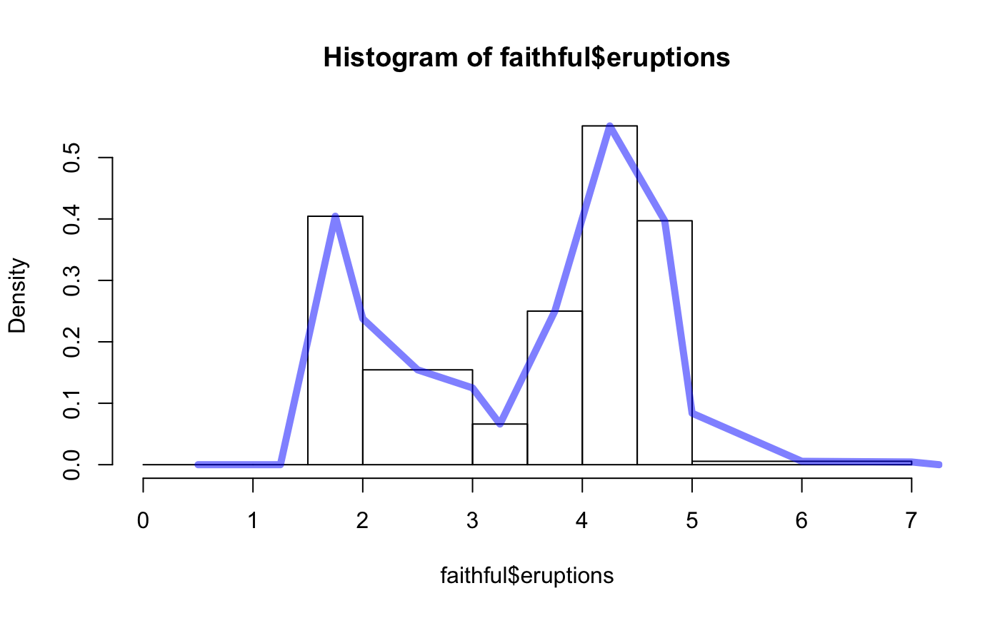

Turn histograms into frequency polygons
freqpoly(x, plot = TRUE, ...) hist2freqpolygon(hist) # S3 method for freqpolygon plot(x, freq = equidist, col = graphics::par("fg"), lty = NULL, lwd = 1, main = paste("Frequency polygon of", paste(x$xname, collapse = "\n")), sub = NULL, xlab = x$xname, ylab, xlim = range(x$x), ylim = NULL, axes = TRUE, labels = FALSE, add = FALSE, ann = TRUE, ...)
| x | a vector of values for which a frequency polygon is desired. |
|---|---|
| plot | a logical indicating if a plot should be generated. |
| ... | additional arguments passed on to |
| hist | a histogram object produced by |
| freq | A logical indicating whether the vertical scale should be frequency (count). |
| col | A color for the frequency polygon. |
| lty | An integer indicating the line type. |
| lwd | An integer indicating the line width. |
| main | A title for the plot. |
| sub | A sub-title for the plot. |
| xlab | Label for the horizontal axis. |
| ylab | Label for the vertical axis. |
| xlim | A numeric vector of length 2. |
| ylim | A numeric vector of length 2. |
| axes | A logical indicating whether axes should be drawn. |
| labels | A logical indicating whether labels should be printed or a character vector of labels to add. |
| add | A logical indicating whether the plot should be added to the current plot |
| ann | A logical indicating whether annotations (titles and axis titles) should be plotted. |
An object of class "freqpoly" (invisibly). Additionally, if plot is
TRUE, a plot is generated.
freqpoly(faithful$eruptions)